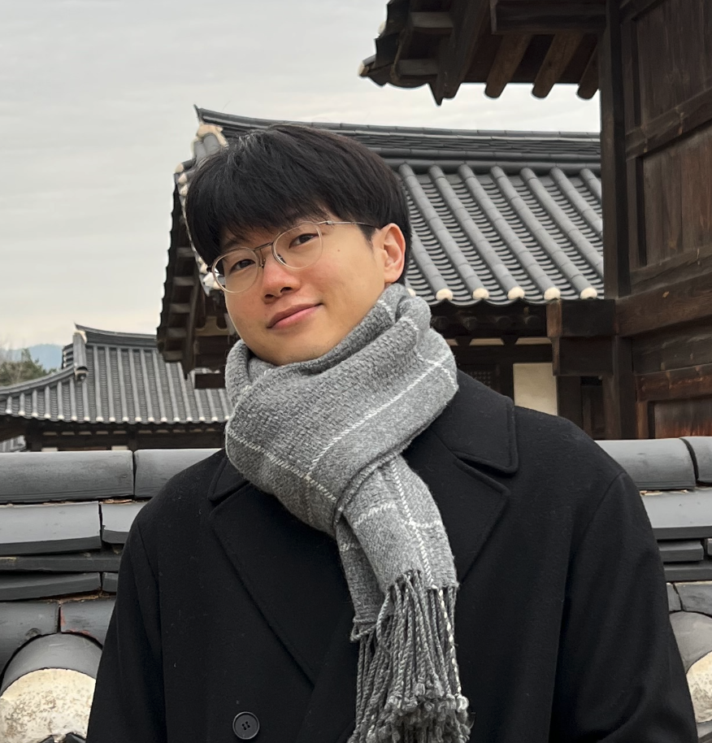
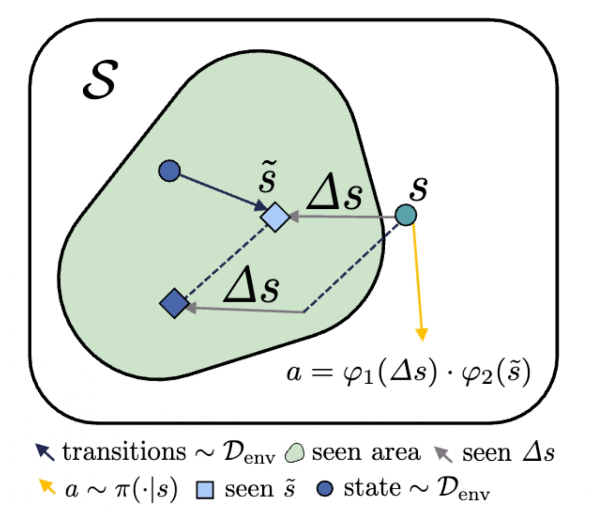

|
Dongwook Lee
Hi! I’m a undergraduate student at Seoul National University advised by Gunhee Kim. I’m deeply interested in guiding agents to survive in uncertain environments and constructing RL foundation model.
Email /
CV /
Twitter /
Github /
LinkedIn
|

|
|

|
Compositional Conservatism: A Transductive Approach in Offline Reinforcement Learning
Yeda Song*,
Dongwook Lee,*,
gunhee Kim,
ICLR, 2024
Openreview
/
arXiv
/
CODE
COCOA is a novel approach in offline reinforcement learning (RL) that promotes compositional conservatism by breaking down the input state into an anchor and its deviation. It utilizes a learned reverse dynamics model to ensure both the anchors and differences align with in-distribution data, thereby mitigating OOD problem in the input space used by policies or value functions.
|
Education
|
| Seoul National University, Korea |
B.S. in Naval Architecture and Ocean Engineering
B.S. in Computer Science
Mar. 2016 - Present
|
| Peking University, China |
Exchange Student in Engineering College
Jan. 2022 - Jan. 2023
|
Experience
|
| Seoul National University Vision & Learning Lab | Seoul, Korea |
Intern Researcher in Reinforcement Learning
Jan. 2023 - Present
|
| Peking University | Beijing, China |
Intern Researcher in Multimodal Domain
Conducted research to enhance fine-grained classification performance using sound, image, and text modalities.
Oct. 2022 - Jan. 2023
|
| Seoul National University Semi-Conductor for AI Laboratory | Seoul, Korea |
Remote Exam Supervision Program Team Intern
An Android application for real-time exam supervision.
Sep. 2021 - Dec. 2021
|
| Daewoo ShipBuilding & Marine Engineering | Siheung, Korea |
Propulsion Design R&D Team Intern
Introduced a process to visualize a propeller for a commercial container ship using C++. Analyzed the efficiency of propeller shapes.
Jul. 2020 - Aug. 2020
|
| Military Service | Air-force, Korea |
Service Period
Jan. 2018 - Dec. 2019
|
Feel free to clone this format from this template.
|
|
{kind=link}